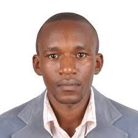

| Home | Registration | Program | Directions | Flyer |
Join us for a 5-day workshop featuring exclusive lectures and impactful networking opportunities with experts in HIV/AIDS and cancer research from Tanzania, Kenya, the UK, and South Africa.
We are also excited to be joined by two invited speakers: Dr. Justine Nasejje and Dr. Edmund Njeru Njagi, bringing global expertise to our workshop in HIV/AIDS and cancer data analysis. By the end of the workshop, participants are expected to:➊ Use statistical and machine learning methods for data linkage, processing & documentation using R and Python.
➋ Apply survival analysis techniques for analysing HIV/AIDS and cancer data.
➌ Joint model longitudinal and time-to-event HIV/AIDS and cancer ouctomes.
➍ Handle missing data using robust multiple imputation framework.
➎ Critically evaluate analytical methods to use in cancer epidemiology, HIV/AIDS reasearch and public health research.
➏ Acquire crucial skills for reproducible research using R Markdown and version control (GIT).
➐ Engage in professional networking with peers, national and international experts.
We warmly welcome ethuisiastic researchers (just like us!) with diverse academic and professional backgrounds who are eager to advance their skills in using open-source statistical software R and Python for analysing routine HIV/AIDS and cancer data. To fully benefit from the workshop, participants should bring a personal laptop with the required software pre-installed, as detailed in the Download section. To register attend this workshop, visit registration page. Registration fee for the workshop is TZS 250,000/- to cater your breakfast and lunches. The deadline for workshop registration is October 17, 2025. Any questions you have can be directed at IBS Tanzania Region. The IBS Tanzania Region is also expected to host a symposium at Malaika Beach Resort, Mwanza, on 12th November 2025. This conference is an excellent platform to showcase your academic work, gain exposure, and network with professionals from different fields. As participant to the workshop, you are invited to submmit an abstract and register at CUHAS scientific conference portal and register. The extended deadline for abstract submission is 12th November 2025.
|  |